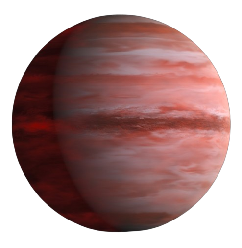

Kepler-1338-b

Welcome to Kepler-1338-b! Here are some fascinating facts:
-
ü™ê Location: Approximately 2,700 light-years away in
the constellation Lyra, discovered by NASA's Kepler mission in 2016.
-
üìè Size: A "super-Earth" with a radius about 1.7
times that of our planet.
-
üåå Orbit: A short orbital period of roughly 19.2 days
around its host star.
-
⭐ Host Star: Orbits a cooler K-dwarf star, outside
the habitable zone, making it unlikely to support life.